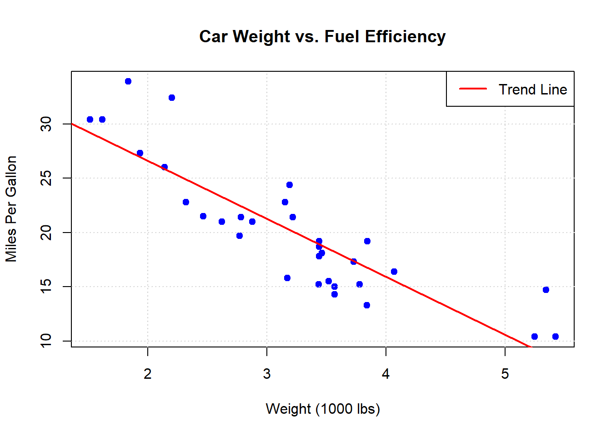
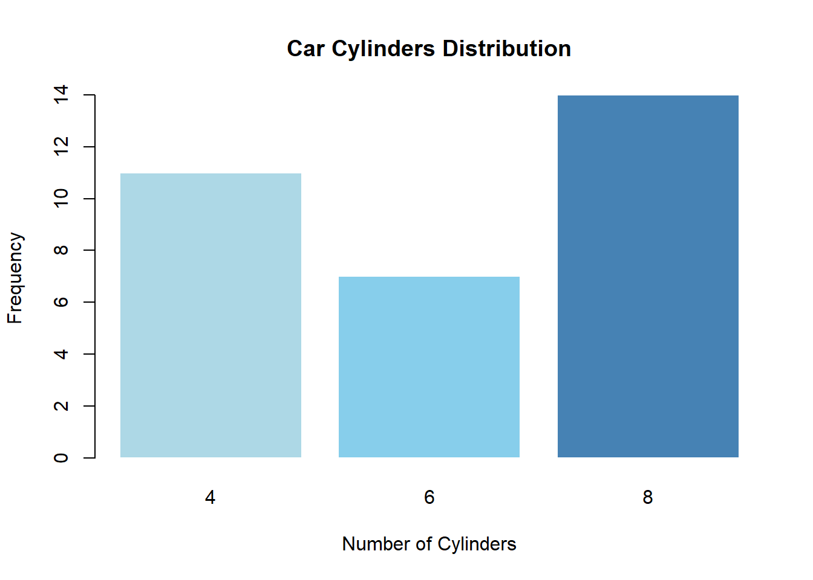
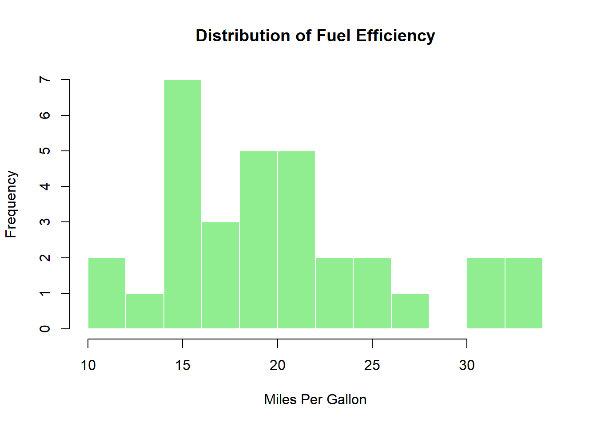
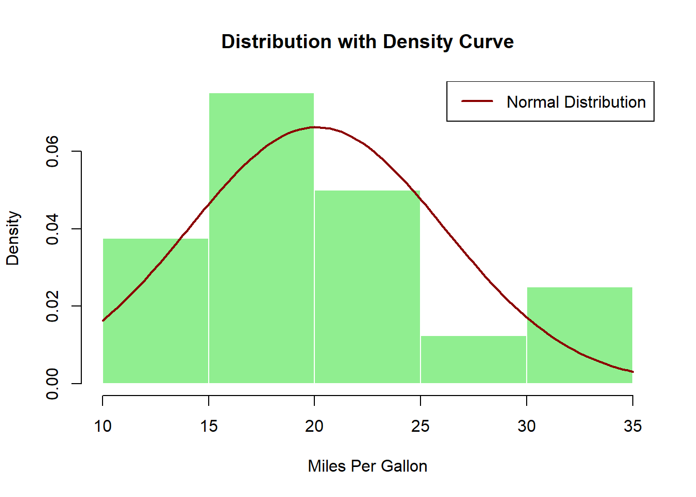
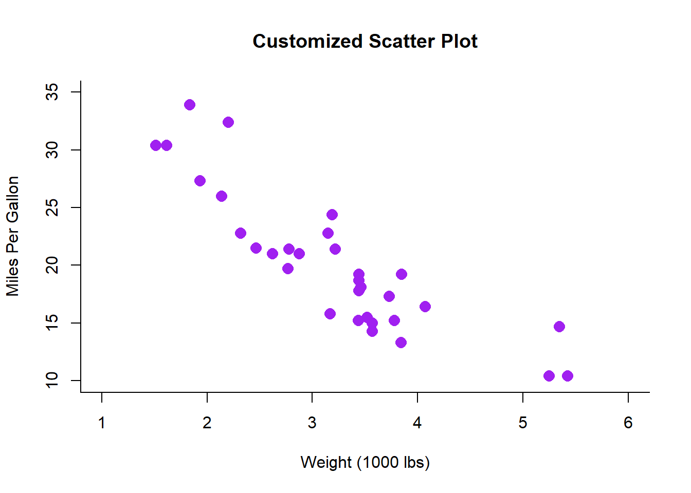
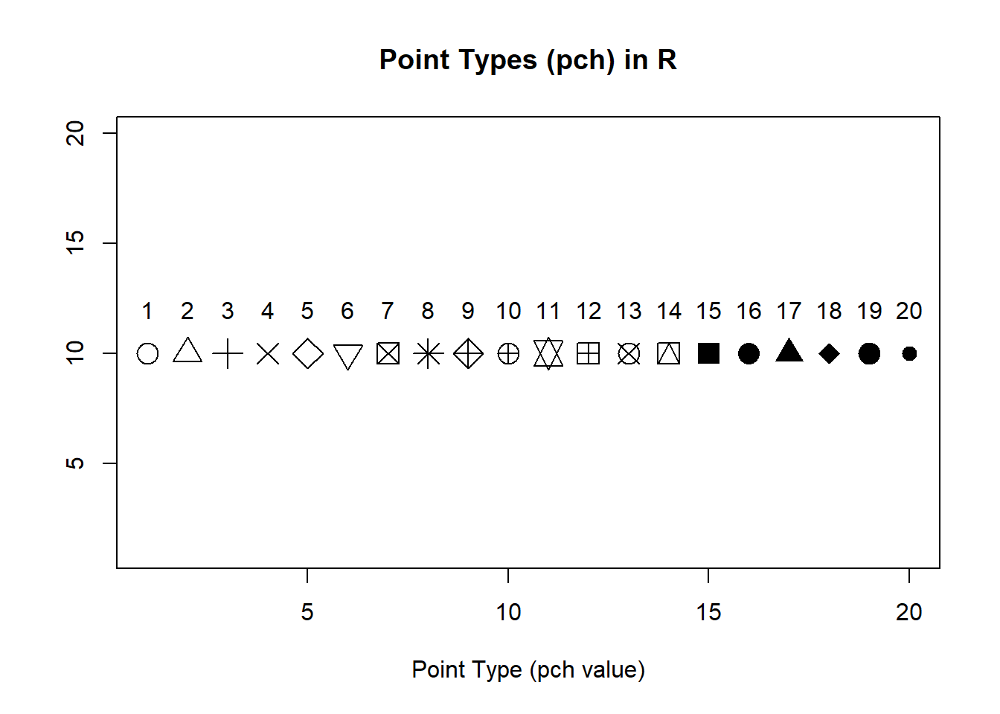
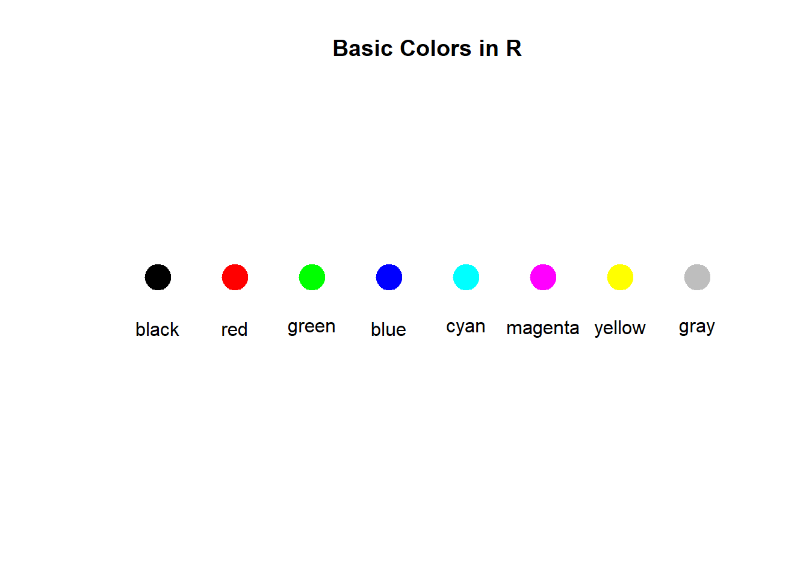
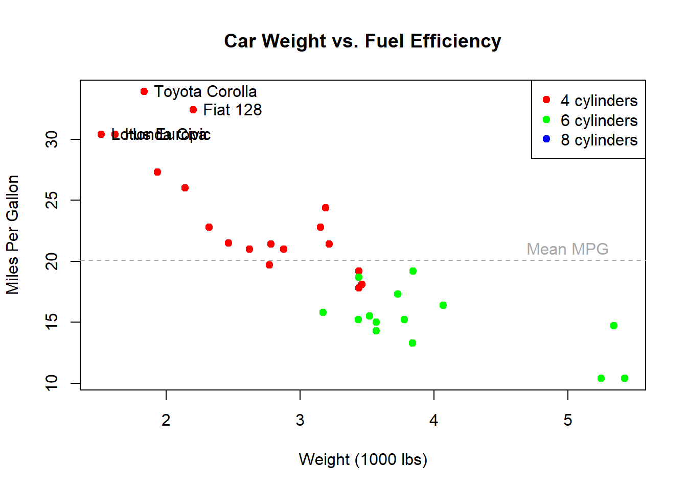

Learn how to create plots using R’s built-in graphics functions
Published
February 15, 2023
R comes with a built-in graphics system known as “base graphics.” These functions provide a straightforward way to create plots without requiring additional packages.
Basic Plot Types
Scatter Plots
# Basic scatter plotplot(mtcars$wt, mtcars$mpg, main ="Car Weight vs. Fuel Efficiency",xlab ="Weight (1000 lbs)",ylab ="Miles Per Gallon",pch =19, # Solid circle point typecol ="blue")# Add a gridgrid()# Add a trend lineabline(lm(mpg ~ wt, data = mtcars), col ="red", lwd =2)# Add a legendlegend("topright", legend ="Trend Line", col ="red", lwd =2)

Line Plots
# Create some datax <-1:10y <- x^2# Basic line plotplot(x, y, type ="l", # 'l' for linemain ="Line Plot Example",xlab ="X Values",ylab ="Y Values",col ="darkgreen",lwd =2)# Add points to the linepoints(x, y, pch =19, col ="darkgreen")# Add another linelines(x, 2*x, col ="blue", lwd =2)# Add a legendlegend("topleft", legend =c("y = x^2", "y = 2x"), col =c("darkgreen", "blue"), lwd =2)
Bar Plots
# Create a simple frequency tablecylinders <-table(mtcars$cyl)# Basic bar plotbarplot(cylinders,main ="Car Cylinders Distribution",xlab ="Number of Cylinders",ylab ="Frequency",col =c("lightblue", "skyblue", "steelblue"),border ="white")

# Add text labels on top of barstext(x =barplot(cylinders), y = cylinders +1, labels = cylinders, col ="black")
Histograms
# Basic histogramhist(mtcars$mpg,main ="Distribution of Fuel Efficiency",xlab ="Miles Per Gallon",col ="lightgreen",border ="white",breaks =10) # Number of bins

# Add a density curvehist(mtcars$mpg,main ="Distribution with Density Curve",xlab ="Miles Per Gallon",col ="lightgreen",border ="white",freq =FALSE) # Show density instead of frequency# Add a normal density curvecurve(dnorm(x, mean =mean(mtcars$mpg), sd =sd(mtcars$mpg)),add =TRUE, col ="darkred", lwd =2)# Add a legendlegend("topright", legend ="Normal Distribution", col ="darkred", lwd =2)

Box Plots
# Basic box plotboxplot(mpg ~ cyl, data = mtcars,main ="Fuel Efficiency by Cylinder Count",xlab ="Number of Cylinders",ylab ="Miles Per Gallon",col =c("lightpink", "lightblue", "lightgreen"))# Add a title to the plottitle("Comparison of MPG Distribution")
Customizing Plots
Plot Parameters
# Create a customized scatter plotplot(mtcars$wt, mtcars$mpg,main ="Customized Scatter Plot",xlab ="Weight (1000 lbs)",ylab ="Miles Per Gallon",pch =16, # Point typecol ="purple", # Point colorcex =1.5, # Point sizetype ="p", # Plot type ('p' for points)lwd =2, # Line widthbty ="l", # Box type ('l' for L-shaped)xlim =c(1, 6), # X-axis limitsylim =c(10, 35) # Y-axis limits)

Colors and Point Types
# Create a plot showing different point types and colorsplot(1:20, 1:20, type ="n", # 'n' for no plottingmain ="Point Types (pch) in R",xlab ="Point Type (pch value)",ylab ="")# Add points with different pch valuesfor (i in1:20) {points(i, 10, pch = i, cex =2)text(i, 12, labels = i)}

# Show different colorsplot(1:8, rep(1, 8), type ="n",main ="Basic Colors in R",xlab ="", ylab ="",xlim =c(0.5, 8.5), ylim =c(0, 2),axes =FALSE)colors <-c("black", "red", "green", "blue", "cyan", "magenta", "yellow", "gray")for (i in1:8) {points(i, 1, pch =19, col = colors[i], cex =3)text(i, 0.7, labels = colors[i])}

Multiple Plots in One Figure
# Set up a 2x2 plotting areapar(mfrow =c(2, 2))# Plot 1: Scatter plotplot(mtcars$wt, mtcars$mpg, main ="Weight vs MPG", pch =19)# Plot 2: Histogramhist(mtcars$mpg, main ="MPG Distribution", col ="lightblue")# Plot 3: Box plotboxplot(mpg ~ cyl, data = mtcars, main ="MPG by Cylinders", col ="lightgreen")# Plot 4: Bar plotbarplot(table(mtcars$gear), main ="Gear Count", col ="salmon")
# Reset to 1x1 plotting areapar(mfrow =c(1, 1))
Adding Elements to Plots
# Create a basic plotplot(mtcars$wt, mtcars$mpg, type ="n", # Start with an empty plotmain ="Car Weight vs. Fuel Efficiency",xlab ="Weight (1000 lbs)",ylab ="Miles Per Gallon")# Add points with different colors by cylindercyl_colors <-c("red", "green", "blue")for (i inunique(mtcars$cyl)) { subset_idx <- mtcars$cyl == ipoints(mtcars$wt[subset_idx], mtcars$mpg[subset_idx], col = cyl_colors[i/4], # 4,6,8 cylinders mapped to colorspch =19)}# Add a legendlegend("topright", legend =c("4 cylinders", "6 cylinders", "8 cylinders"), col = cyl_colors, pch =19)# Add text annotationstext(mtcars$wt[mtcars$mpg >30], mtcars$mpg[mtcars$mpg >30], labels =rownames(mtcars)[mtcars$mpg >30],pos =4) # Position 4 is to the right# Add a horizontal line at mean MPGabline(h =mean(mtcars$mpg), lty =2, col ="darkgray")text(5, mean(mtcars$mpg) +1, "Mean MPG", col ="darkgray")

Saving Plots
# Example of how to save a plot (not run)# png("my_plot.png", width = 800, height = 600)plot(mtcars$wt, mtcars$mpg, main ="Plot to Save", pch =19, col ="blue")
# dev.off() # Close the device to save the file# Other formats# pdf("my_plot.pdf", width = 8, height = 6)# jpeg("my_plot.jpg", width = 800, height = 600, quality = 100)# svg("my_plot.svg", width = 8, height = 6)
Base graphics in R provide a foundation for creating plots. While newer packages like ggplot2 offer more sophisticated options, base graphics remain valuable for quick visualizations and understanding plotting fundamentals in R.